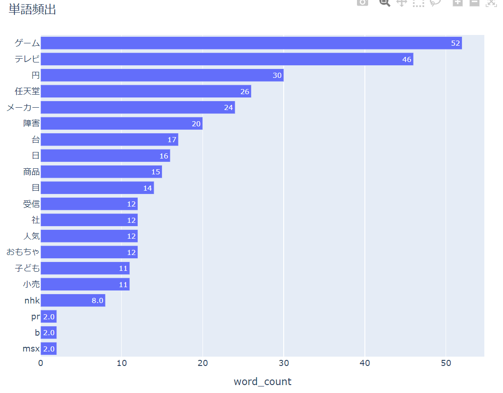
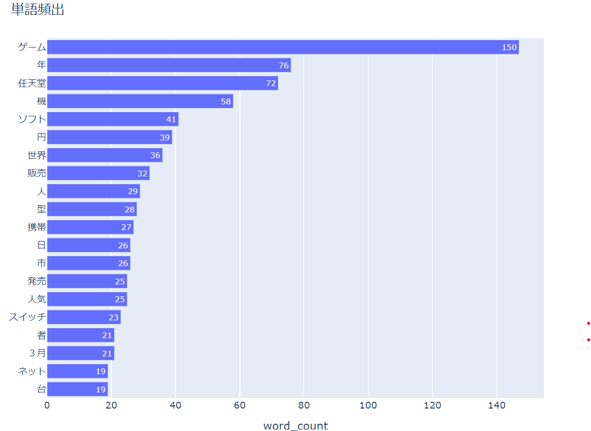

<!DOCTYPE html>
<html lang="jp">
<head>
    <!-- ⑥↓タイトルを変えてみよう -->
    <title>竜吾のサイト</title>
    <!-- ⑤スタイルシートの設定をしよう --> <link rel="stylesheet" href="./css/style.css">
    <!-- h1.htmlからある行をコピペしてくればOK -->
</head>
   <body style="background-color: rgb(137, 217, 239);"><p style="color: rgb(50, 127, 158);"></p></body>

<h1><font color="red">任天堂の分析</font></h1>
<h1><strong>＜データサイエンス～テキストマイニング＞</strong></h1>
                    <h1><font color="red">過去,                 　　　　　　　　　　　　現代</font></h1>


<br>



<br>


<h2><strong>＜まとめ、分かったこと＞</strong></h2>
<h2>過去の分析では、ゲーム名などの明確にわかる詳細は出てきていないが現代になってマリオやどうぶつの森を連想させるゲームのワード、スイッチやDSといったゲーム機が出てくるようになっている</h2>
また、配信や携帯といわれる現代社会の進歩具合などもわかるワードが出てくる。


<h1><strong>＜分かりやすいまとめ＞</strong></h1>
分かりやすかったのであっちゃんさんのリンクを張らせていただきました
<a href="https://xatsukix.github.io/xbp/de12/7.html" target="_blank">参考</a>


<h3><strong>感想</strong></h3>
<font color="orange"><strong>今回の分析から昔と今の違いを社会的成長を確認することができ、単語から連想できる事柄がたくさんあり、一つ一つのワードが現代の何に影響を与えているのか、どんな成長をさせたのかなど興味深い分析ができそうだと感じた。</strong></font>


    

</body>
<title>ryuugoのサイト</title>
</html>